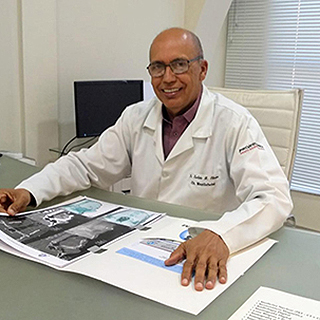
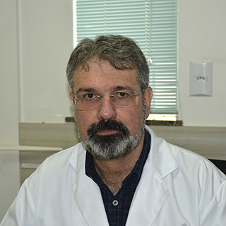
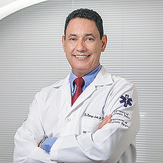

Nossos Doutores Especialistas
Dra. Alessandra Ferreira de Noronha
- Graduação em Fisioterapia pela Pontifícia Universidade Católica de Minas Gerais
- Mestrado em Ginecologia pela Unesp
- Especialização em Geriatria e Gestão e Auditoria em Saúde
- Especialização em Reabilitação Vascular
Dr. Alvaro Luis Ribeiro de Paula
- Graduação em Medicina pela Universidade Federal de Goiás
- Título de Especialista em Coloproctologia pela Universidade Federal de Goiás
Dr. Daniel Marques Novaes
- Graduado em Odontologia pela Universidade Paulista
- Titulo de Especialista em Cirurgia e Traumatologia Bucomaxilofacial pelo Hospital de Urgência de Goiânia
Dra. Denise Guimarães de Paula
- Graduação em medicina pela Universidade Federal de Goiás
- Titulo de Especialista em Pediatria pelo Conselho Federal de Medicina
- Titulo de Especialista em Acupuntura pela Sociedade Médica Brasileira de Acupuntura

Dr. Euclides Barboza de Oliveira
- Graduado em Odontologia pela Universidade Federal de Goiás
- Titulo de Especialista em Cirurgia Bucomaxilofacial pela Universidade do Estado do Rio de Janeiro
- Mestre em Cirurgia Bucomaxilofacial pela Universidade do Estado do Rio de Janeiro
- Titulo de Especialista em Farmacologia Clínica pela Uni-evangélica
- Graduação em Medicina pela Universidade Federal de Goiás
- Título de Especialista em Angiologia e Cirurgia Vascular pela Sociedade Brasileira de Cirurgia Vascular
- Título de Especialista em Ecografia Vascular pela Sociedade Brasileira de Cirurgia Vascular
Dr. Fabricio Rodrigues Santiago
Dr. Geraldo Silva Queiroz
- Graduado em Medicina pela Universidade Federal de Goiás
- Titulo de Especialista em Oncologia pelo Conselho Federal de Medicina
- Titulo de Especialista em Mastologia pelo Conselho Federal de Medicina
- Título de Especialista em Acupuntura pela Sociedade Médica Brasileira de Acupuntura

Dr. Humberto Franco do Carmo
- Graduação em Medicina pela Universidade Federal de Goiás
- Título de Especialista em Reumatologia pela Sociedade Brasileira de Reumatologia
- Título de Especialista em Acupuntura pela Sociedade Médica Brasileira de Acupuntura
Dra. Jacqueline Tosta Rezende
- Graduação em Medicina pela Universidade Federal de Goiás
- Título de Especialista em Oftalmologia
Dra. Karinne Borges Franca Cintra
- Graduada em Psicologia pela Pontifícia Universidade Católica
- Especialista em Psicologia Cognitivo Comportamental

Dr. Rafael Araújo Cintra
- Graduação em Medicina pela Universidade Federal de Goiás
- Título de Especialista em Psiquiatria pela Universidade Federal de Goiás

Dr. Rodrigo Leite de Souza
- Graduação em Medicina pela Universidade Federal de Goiás
- Título de Especialista em Oftalmologia pelo Instituto de Olhos de Goiânia
- Pós Graduação em Medicina e Cirurgia Estética pelo Colégio Brasileiro de Medicina e Cirurgia Estética
Dra. Silvia Cristina Guimarães
- Graduação em Medicina pela Universidade Federal de Goiás
- Título de Especialista em Pediatria pela Universidade Federal de Goiás
- Título de Especialista em Homeopatia pela Sociedade Médica Brasileira de Homeopatia
- Título de Especialista em Acupuntura pela Sociedade Médica Brasileira de Acupuntura
Dra. Vanessa Sabel Nunes Monteiro
- Graduado em Odontologia pela Universidade Estadual Paulista
- Titulo de Especialista em Periodontia pela Associação Paulista de Cirurgiões Dentistas